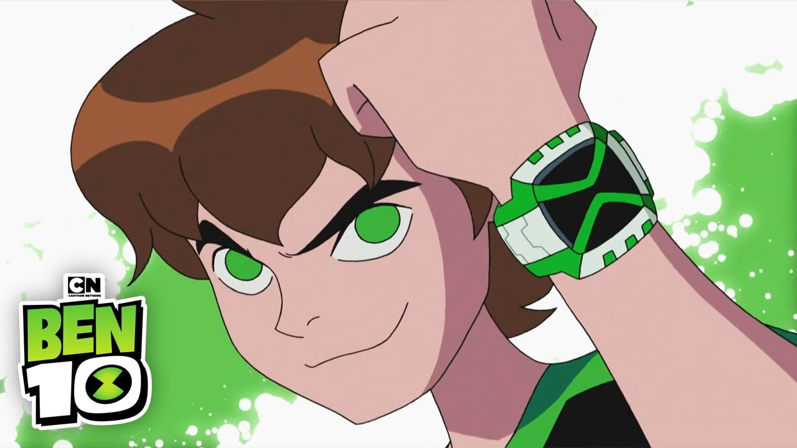

Ben Tennyson
Assistir Ben 10 Omniverse
Assistir Ben 10 Clássico
Assistir Ben 10 Força Alienígena
Assistir Ben 10 Supremacia Alienígena
Todos os 63 aliens que o Ben se transformou
Melhor música do Ben 10